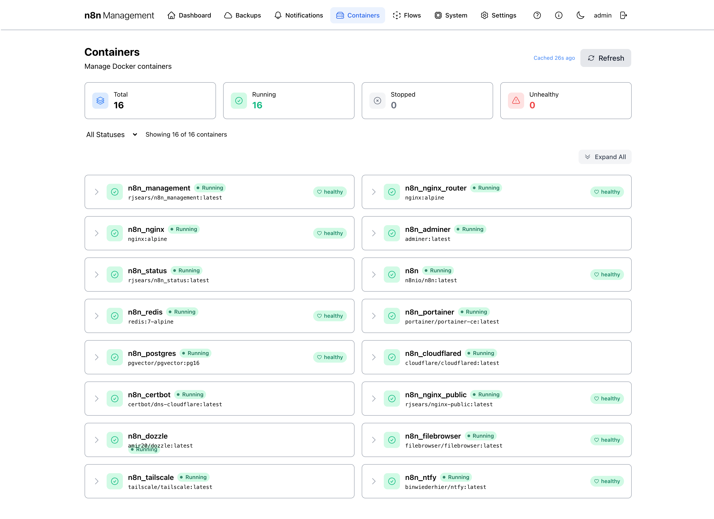
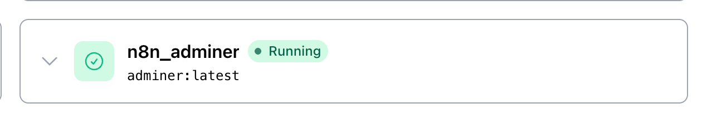
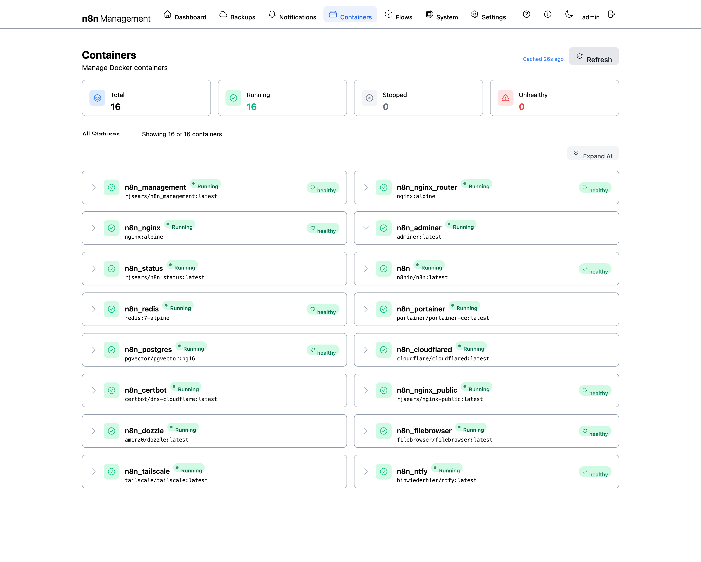
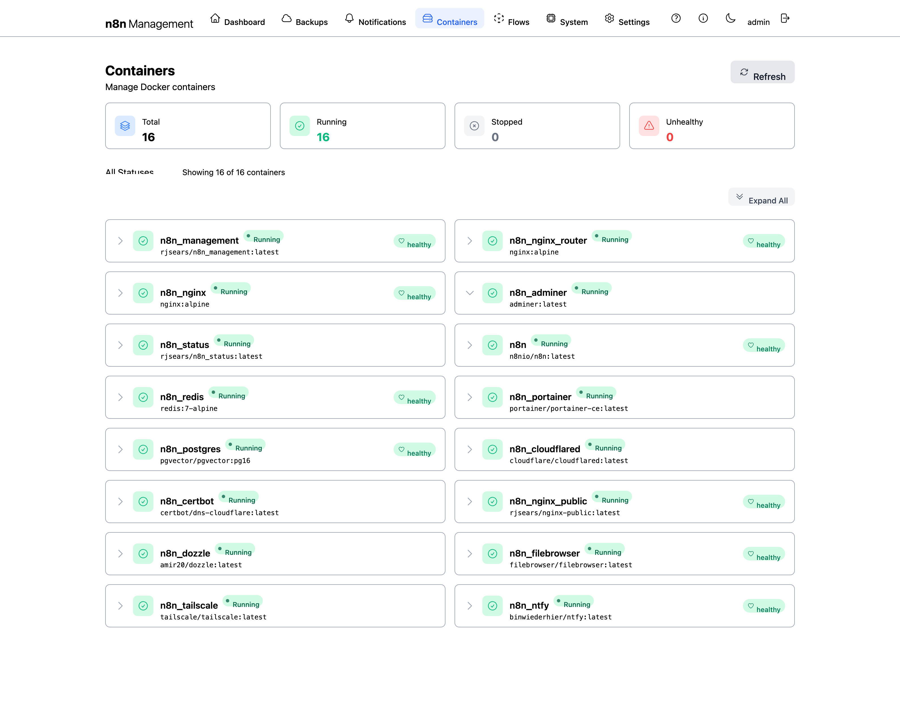

Containers
The Containers page is your day-to-day control surface for the Docker stack that runs n8n: every container that the management console can see is listed, with one-click access to logs, restart, recreate, per-container alerts, and an in-browser terminal session.
Overview
The page is laid out in four bands, top to bottom: a header with title and a manual Refresh button, a row of four summary cards, a filter dropdown plus an Expand All control, and the container list itself rendered as a two-column grid of collapsible cards.

Summary cards & list
Four cards across the top mirror the Docker status numbers shown on the Dashboard's Docker Containers panel but break them down into independent counts.
| Card | Counts |
|---|---|
| Total | Every container the management console can see, regardless of state. |
| Running | Containers in running state. |
| Stopped | Containers in exited or stopped state. |
| Unhealthy | Running containers reporting unhealthy from their Docker healthcheck. Unlike the Dashboard, this card does not count "healthy" — only failures. |
Filtering and the list
The filter dropdown ("All Statuses") narrows the list by container state. The "Showing X of Y containers" label updates live to reflect the filter. The Expand All button on the right opens every container's action panel at once — useful when you need to scan several containers' resource usage in one glance.
Filter options
- All Statuses — every container (default).
- Running Only — hides anything not currently running.
- Stopped Only — only exited or stopped containers. Useful right after a host reboot or when investigating a crash.
List layout
Each container is a card with: a chevron (▶) to expand, a green-check status icon, the container name, a colored state pill (e.g., Running), the image name in monospace below the name, and (for containers with a Docker healthcheck) a health badge on the right.
Health badges
The right-side badge reflects the container's Docker healthcheck status:
| Badge | Meaning |
|---|---|
| healthy | Healthcheck passing. |
| starting | Container started; healthcheck still in its grace period. |
| unhealthy | Healthcheck failing repeatedly. Investigate immediately. |
| (no badge) | The container's image does not declare a healthcheck. Not a problem on its own, but you have less visibility — consider reviewing logs periodically. |
docker-compose.yaml. If a container you care about has no badge and you want one, add a HEALTHCHECK directive at the image level.Expanding a container
Clicking a row reveals the per-container action panel: a Recreate Container button at the top, four live resource readouts (Uptime, CPU, Memory, Network), a memory-usage percentage bar, and five action buttons across the bottom.

Live readouts
| Field | Source |
|---|---|
| Uptime | Time since this container instance started. |
| CPU | Current CPU percentage of one core. |
| Memory | Resident memory in human-readable units. |
| Network | Cumulative network throughput since container start. |
| Memory Usage % | Memory as a percentage of the container's hard limit (or host RAM if no limit set). |
Per-container actions
Five action buttons sit below the live readouts: Stop, Restart, Alerts, Logs, Terminal. The full-width Recreate Container button at the top of the panel is the most aggressive option — used when configuration in docker-compose.yaml or in .env has changed and a simple restart is not enough.
Stop & Restart
Stop sends Docker's stop signal to the container. The container's process gets a graceful shutdown window (default 10 seconds) before being killed. Restart stops then starts the container without recreating it — same image, same config.
n8n_nginx or n8n_management container ends your current session — you'll lose access to this UI until you restart it from the command line. There is no undo button on this page once nginx is stopped.Recreate Container
Recreate stops the container, removes it, and starts a fresh instance using the same compose configuration. The new container picks up the latest values from .env and any compose-file changes.
.env or docker-compose.yaml, use Recreate Container instead.Logs viewer
Logs opens an in-browser viewer for the container's stdout/stderr. The header lets you choose how many lines to fetch (50 / 100 / 200 / 500 / 1000 / All) and a "Since:" time filter. The Follow toggle keeps streaming new lines as they arrive; Refresh manually re-fetches the current window.

Alerts (per-container)
Alerts opens the per-container Notification Settings modal. This is where you configure which container-level events should fire a notification, scoped just to this container. The global notification routing — channels, groups, rules — lives separately under Notifications.

Configurable events
| Group | Event | Trigger |
|---|---|---|
| Status Events | Container Stopped | Container exits unexpectedly. |
| Health Check Failed | Healthcheck transitions to unhealthy. Disabled (and noted) if the image has no healthcheck. | |
| Container Restarted | Docker auto-restarts the container. | |
| Resource Thresholds | High CPU Usage | CPU exceeds a configurable threshold for a sustained period. |
| High Memory Usage | Memory exceeds a configurable threshold. |
Terminal
Terminal opens an in-browser shell session inside the running container. Clicking the button navigates to the System page's Terminal tab with the container pre-selected and auto-connected — concretely, to /management/system?tab=terminal&target=<container_id>&autoconnect=true.
The Terminal feature is fully documented under System → Terminal, since the management host's terminal lives in the same place. From here, just remember: clicking Terminal on a container is a deep-link shortcut.
Refresh & caching
The page header shows a "Cached Ns ago" timestamp and a Refresh button. The container list is cached briefly to reduce load on the Docker daemon — by default the cache lives for ~30 seconds.
Click Refresh to bypass the cache and fetch fresh data immediately. The summary cards and per-row stats update at the same time.